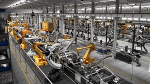
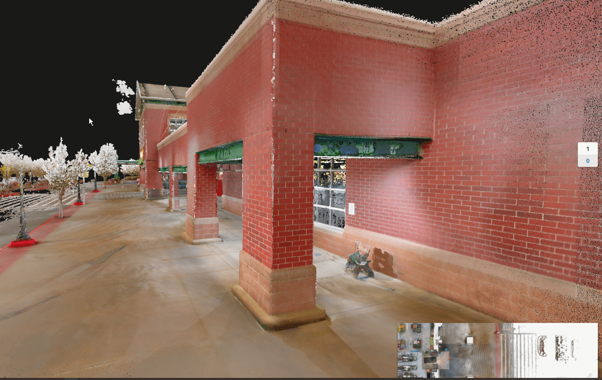
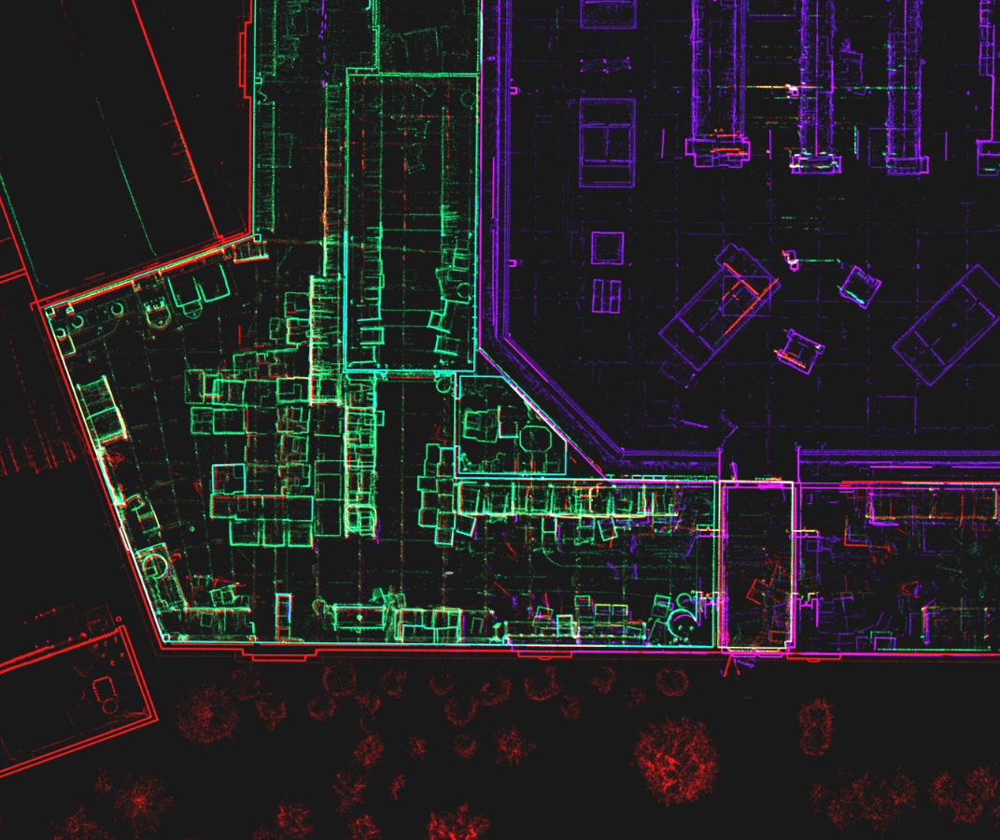
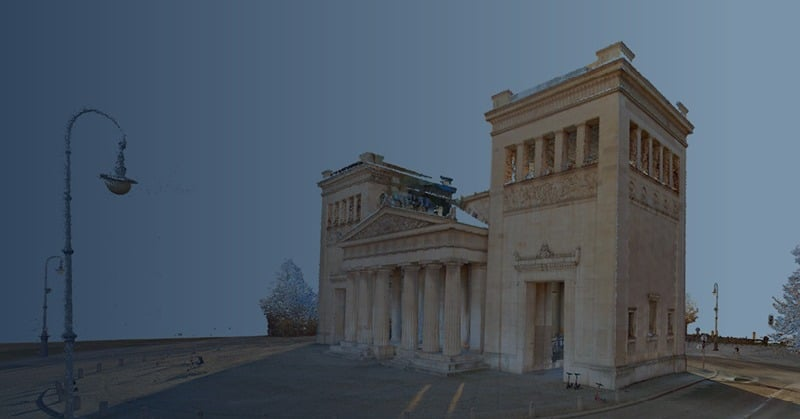

How as-built capture by AEC firm pb2 is powered by NavVis technology

How as-built capture by AEC firm pb2 is powered by NavVis technology

How as-built capture by AEC firm pb2 is powered by NavVis technology
Some representative placeholder content for the third slide.
Architecture and engineering firm pb2 is scanning more and more every month, thanks to the versatility of the NavVis VLX mobile mapping system.
Today, professionals working across the whole building lifecycle have adopted lidar to innovate their processes, find new efficiencies, and sharpen their competitive edge.
pb2 is a mid-sized architecture and engineering firm based in Northwest Arkansas. The company works closely with the largest retailers and convenience stores in the United States, specializing in new construction, renovation, and re-purpose/re-use projects. They perform a variety of services in house, such as as-built capture through the architectural and engineering design process and final documents for construction.
pb2 is consistent with demands of the AEC industry and retail clients specifically. They must work very quickly to meet their clients’ expectations and make the most of all available resources to get it done. That is why they turned to NavVis VLX.
Historical methods
"pb2 has long used a combination of manual measurement tools and 360° photography to produce as-builts", explains Doug Hurley, President. These data sets formed the basis for most of their work for a specific project building, whether that meant designing an addition or re-purposing the facility for new commercial use.
Though the company found these methods reliable, they also saw that manual processes depleted their resources. Producing an as-built for a single 200,000 sq foot retail store meant sending an architect and up to three engineers into the field for two days or more.
pb2 was also grappling with the other challenges that come with manual measurement and 360° images. For example, accuracy is limited by the ability and attention of the user. And manual measurement doesn’t capture every dimension, which means that sometimes a project team was forced to reverify the scope of work and potentially revisit a site to capture the necessary measurements.
Doug Hurley says pb2 knew it needed to make a big change and do it quickly.
“We still use manual measurements and 360° data,” adds Josh Steinert, Senior Manager Graphics & Technology “But we work to continuously adapt our data capture procedures for efficiency. With recent advances in AEC technology, it was increasingly necessary to use new tools that would allow us to virtually ‘revisit’ a site at any time after the initial survey, acquire dimensions, view angles, and ascertain data that cannot be captured manually.”

Innovating with mobile mapping
"pb2 researched a variety of possible technologies and adopted several new tools. They began to use terrestrial lidar for smaller captures. And they began to use the NavVis VLX wearable mobile system for as-built capture of their biggest projects.
“NavVis VLX and the included software provide the fastest mobile laser scanning solution for capturing point clouds and high-quality 360° imagery,” says Josh Steinert. “It minimizes the resources and time needed for capture and offers a level of accuracy and efficiency that is hard to rival with terrestrial scanners.”
They use NavVis VLX to generate as-builts for their larger clients, noting that the mobile scanner greatly improves their speed in the field. While their previous methods used to take multiple people nearly a full week of work, pb2 says that a single employee using NavVis VLX can capture a full 200,000 sq ft store in a single day.
“We have more than doubled the average number of sites we can scan in a week of deployment,” says Cody Hahn, BIM Manager.
pb2 explains that increase in efficiency was enough ROI to make the addition worthwhile. On top of that, the accuracy of the measurements improved, and pb2 solved the problem of missing or incorrect data.
“With NavVis VLX point cloud data, anything can be measured, at any time,” says Cody Hahn. “The 360° images offer the same possibility. Together, they allow visibility virtually anywhere, enabling us to adapt, for instance, by visiting a site earlier in the process, and then adapting the scope of work weeks after the visit.”
Benefits of innovation
The 3D data produced by the mobile mapping system has expedited pb2’s architectural engineering and design work significantly. By facilitating faster creation of Revit models, the scan data has reduced the time spent coordinating between all disciplines by over 60%.
The NavVis technology also makes training easy. As Cody Hahn explains: “Since we prefer to utilize staff who will be working on the project, or with the team, they often need to train quickly. NavVis’ ease of use keeps us agile in staffing and project startup.”
Mobile scanning benefits everyone. It means pb2 can offer better data and an easier design and smoother construction process. It also means they can “cause less disruption to existing sites,” says Josh Steinert “whether that site is consumer based and sales could be affected, or it’s a manufacturing site where production needs to be paused for scanning. Any client appreciates minimal disruption.”
In short, pb2 says NavVis VLX has helped them to improve their workflows and offer a better product to their biggest and most demanding customers. And this means they have been able expand their business.
“pb2 is scanning more and more every month,” concludes Doug Hurley, “and that is in no small part thanks to the versatility of NavVis mobile lidar scanners.”

Card title
Some quick example text to build on the card title and make up the bulk of the card's content.
The 3D data produced by the mobile mapping system has expedited pb2’s architectural engineering and design work significantly. By facilitating faster creation of Revit models, the scan data has reduced the time spent coordinating between all disciplines by over 60%.
The NavVis technology also makes training easy. As Cody Hahn explains: “Since we prefer to utilize staff who will be working on the project, or with the team, they often need to train quickly. NavVis’ ease of use keeps us agile in staffing and project startup.”
Mobile scanning benefits everyone. It means pb2 can offer better data and an easier design and smoother construction process. It also means they can “cause less disruption to existing sites,” says Josh Steinert “whether that site is consumer based and sales could be affected, or it’s a manufacturing site where production needs to be paused for scanning. Any client appreciates minimal disruption.”
In short, pb2 says NavVis VLX has helped them to improve their workflows and offer a better product to their biggest and most demanding customers. And this means they have been able expand their business.
“pb2 is scanning more and more every month,” concludes Doug Hurley, “and that is in no small part thanks to the versatility of NavVis mobile lidar scanners.”